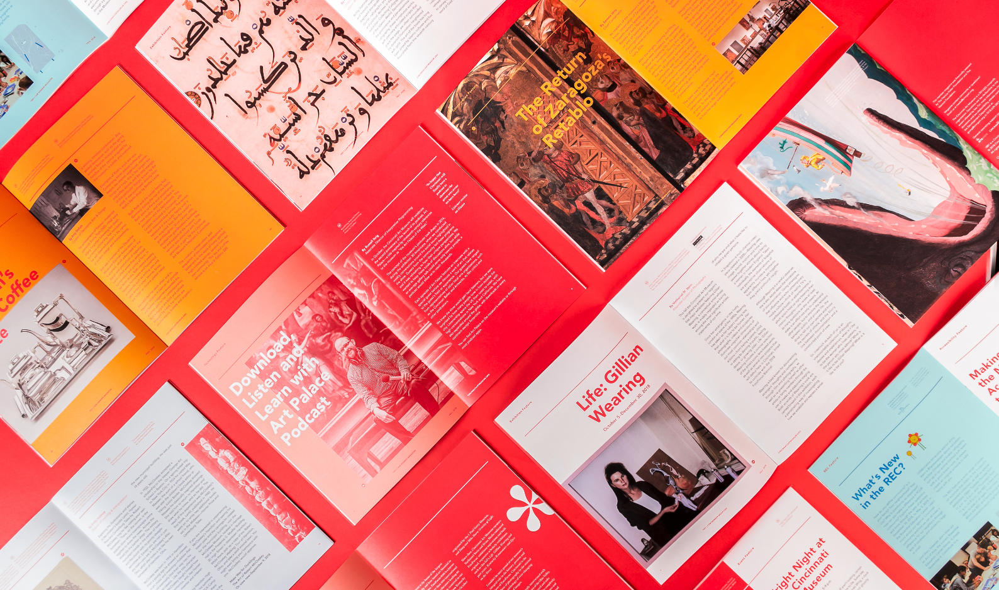
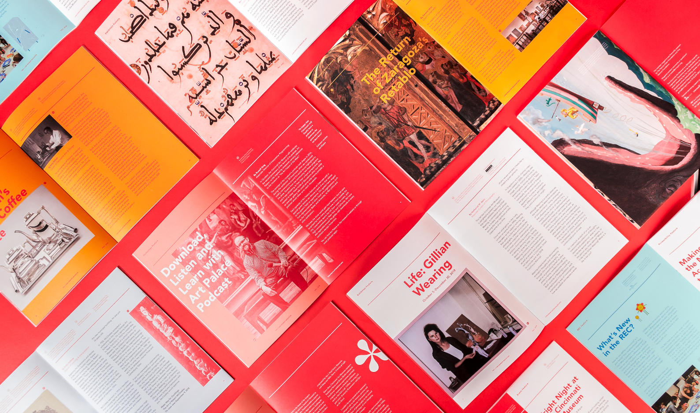

katie schallick is a freelance graphic designer livin’ and workin’ in the 'nati. scroll around & stay awhile.

hi hello!


 



personal fav ☆ personal fav ☆ personal fav ☆ personal fav ☆ personal fav ☆ personal fav ☆ personal fav ☆ personal fav ☆ personal fav ☆ personal fav ☆ personal fav ☆ personal fav ☆ personal fav ☆ personal fav ☆ personal fav ☆ personal fav ☆